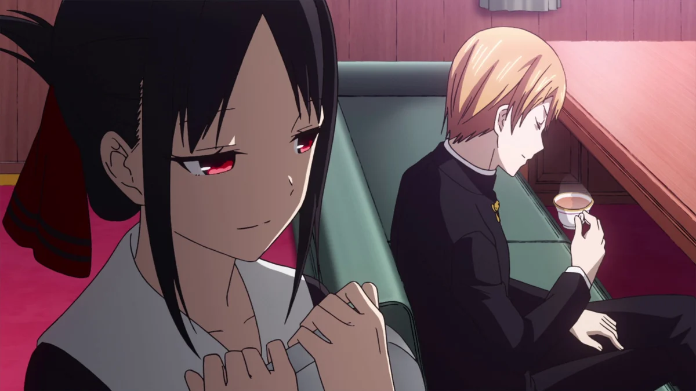
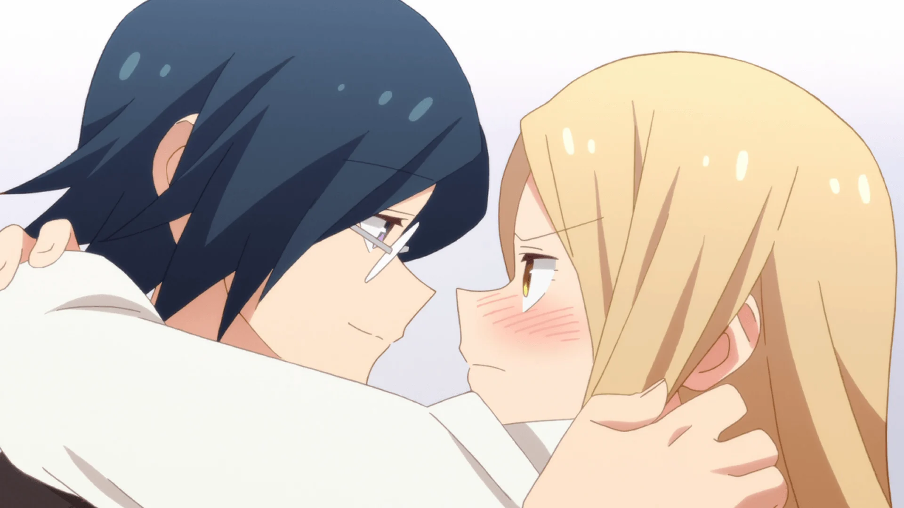
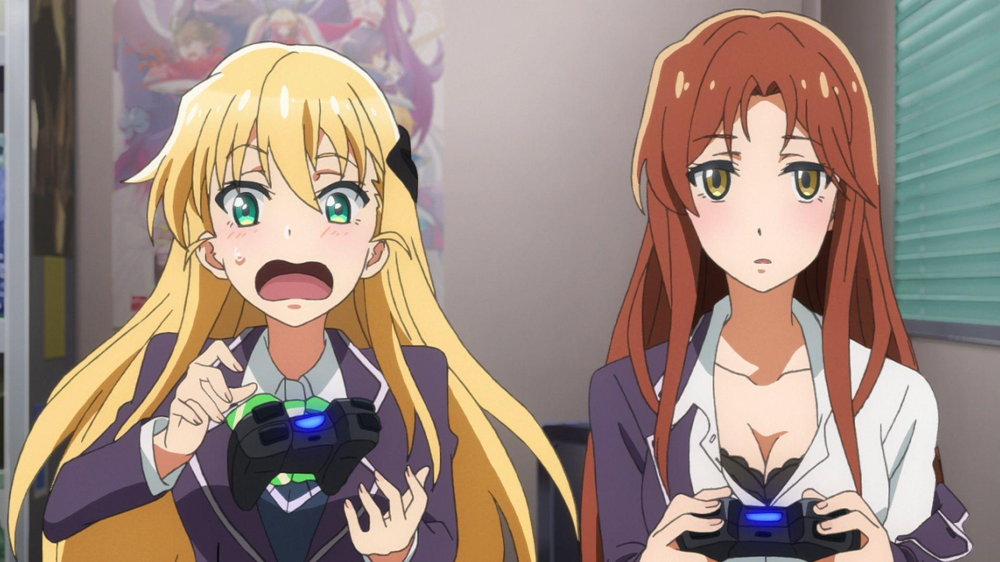
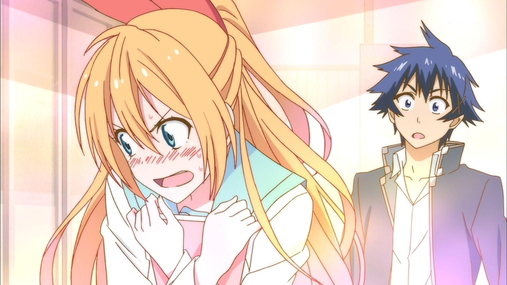
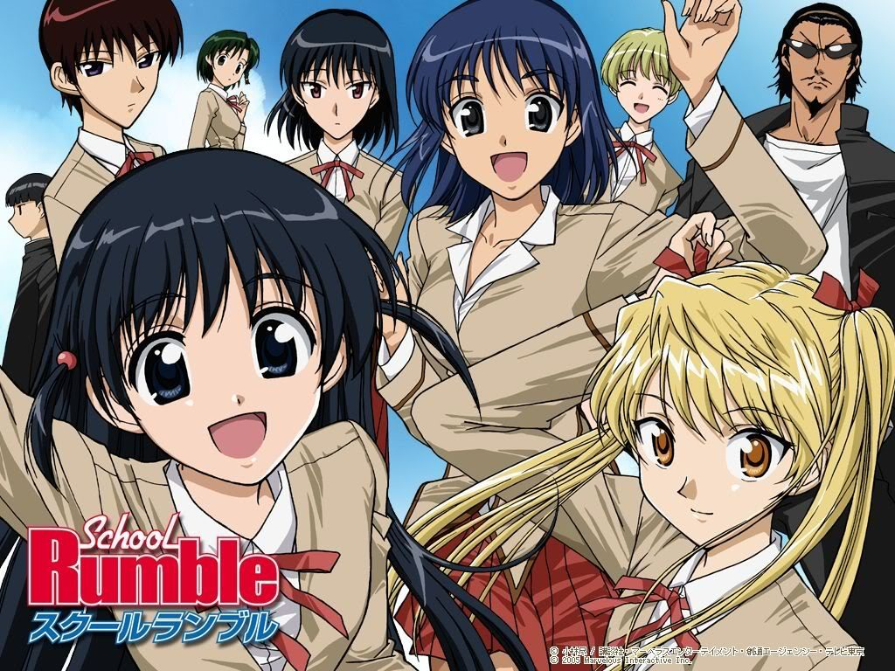
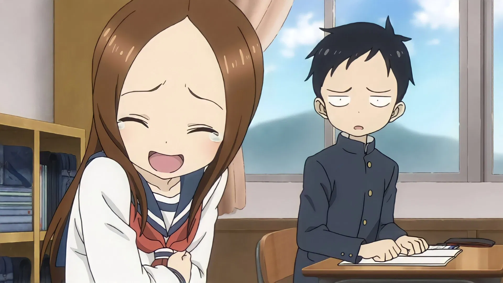
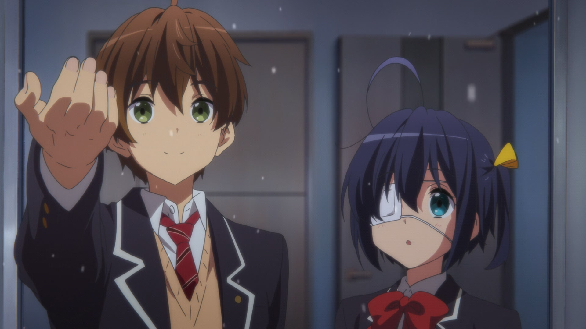
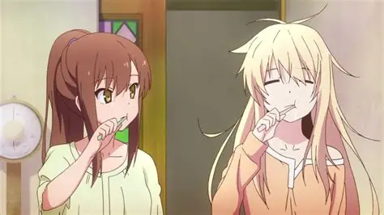

SMASH Senpai
Top 10 Romance Comedy Anime That Are Actually Fun
Romance Comedy anime lives or dies by balance. Too much romance, and it becomes slow and predictable. Too much comedy, and the emotional moments lose their weight. When done right, though, the result is something special — stories that make you laugh one moment and genuinely care about the characters the next.
The best rom-com anime don’t rely on forced jokes or endless misunderstandings. They use humor to reveal personality, strengthen chemistry, and make romantic moments feel natural instead of awkward.
From chaotic school settings to over-the-top situations that somehow turn heartfelt, comedy romance anime thrives on contrast — absurd scenarios paired with surprisingly sincere emotions.
These are the shows that make you smile without trying too hard, laugh without cringing, and root for relationships that feel earned rather than rushed. They understand that love can be messy, embarrassing, and genuinely hilarious.
This list ranks the Top 10 Comedy Romance Anime That Are Actually Fun — anime that blend humor and romance seamlessly, delivering laughs, chemistry, and moments that stay charming long after the episode ends.
Sponsored
#1 Kaguya-sama: Love Is War
Kaguya-sama: Love Is War turns romance into a battlefield. Instead of shy confessions or accidental kisses, this anime treats love like psychological warfare. Kaguya Shinomiya and Miyuki Shirogane are both brilliant, prideful, and deeply in love — yet neither is willing to confess first. In their minds, whoever confesses loses.
What makes Kaguya-sama special is how seriously it commits to the joke. Every episode frames small romantic interactions as intense mind games. A simple conversation becomes a strategy session. A glance turns into a calculated move. The over-the-top narration, dramatic music, and exaggerated reactions elevate everyday moments into hilarious showdowns.
Beneath the comedy, the romance develops slowly and genuinely. Both Kaguya and Shirogane are emotionally insecure, terrified of rejection, and obsessed with maintaining control. Their battles aren’t about dominance — they’re about fear. Fear of vulnerability. Fear of being honest.
As the series progresses, the cast expands and the emotional depth increases. Side characters add chaos, misunderstandings escalate, and the comedy never sacrifices character growth. Kaguya-sama proves that romantic comedy doesn’t have to be shallow. It can be smart, self-aware, and surprisingly heartfelt — all while making you laugh nonstop.
- Episode count: 37+ (multiple seasons)
- Genre: Comedy, Romance, Psychological
- Known for: Mind games, narration, elite comedy timing
- Core theme: Pride vs vulnerability in love

play anime smash or pass here (not sponsored)
SMASH SENPAI – Smash or Pass#2 Toradora!

Toradora! begins as a classic high school romantic comedy built on misunderstandings and clashing personalities. Ryuuji looks intimidating but is gentle and responsible, while Taiga is small, aggressive, and emotionally explosive. Their alliance starts as a practical arrangement — helping each other get closer to their respective crushes.
What sets Toradora apart is how naturally its comedy transitions into emotion. Early episodes rely on slapstick humor, awkward encounters, and chaotic arguments. But as time passes, the jokes give way to genuine emotional conflict. Feelings become messy. Motivations grow complicated. And characters start realizing that love isn’t as simple as they thought.
Toradora excels at portraying emotional immaturity honestly. The characters make bad decisions. They misunderstand their own feelings. They hurt each other unintentionally. Instead of glamorizing romance, the anime shows how confusing and painful it can be — especially when pride and fear get in the way.
By the final arc, Toradora transforms into something deeply sincere. The comedy remains, but it’s supported by emotional payoff that feels earned. It’s a rom-com that grows with its characters, leaving viewers laughing one moment and quietly emotional the next. Few romance anime balance humor and heartbreak this effectively.
- Episode count: 25
- Genre: Romance, Comedy, Drama
- Known for: Emotional payoff and character development
- Core theme: Discovering love through emotional growth
#3 Tsurezure Children
Tsurezure Children is proof that romance doesn’t need long speeches or dramatic story arcs to be effective. The anime focuses on multiple couples, each experiencing different stages of young love — from shy confessions to awkward misunderstandings to painfully honest emotional moments.
Episodes are short and fast-paced, allowing the anime to deliver constant punchlines without dragging scenes out. Each couple has a distinct dynamic: blunt honesty, extreme shyness, miscommunication, or emotional cluelessness. The variety keeps the comedy fresh and relatable.
What makes Tsurezure Children stand out is its realism. These characters don’t behave like idealized romance protagonists. They stumble over words, panic after texting, and overthink the smallest interactions. The humor comes from recognition — seeing your own awkward moments reflected on screen.
Despite its light tone, the anime never mocks its characters’ feelings. Every confession matters. Every emotional moment is treated sincerely. Tsurezure Children is wholesome, funny, and quietly honest — a rom-com that understands how complicated love can feel, especially when you’re young and inexperienced.
- Episode count: 12 (short episodes)
- Genre: Comedy, Romance, Slice of Life
- Known for: Multiple couples and fast-paced humor
- Core theme: Awkwardness and sincerity in young love
#4 Monthly Girls’ Nozaki-kun

Monthly Girls’ Nozaki-kun is a romantic comedy built entirely on misunderstanding, emotional cluelessness, and perfectly timed chaos. The story begins when Sakura Chiyo finally gathers the courage to confess to her crush, Umetarou Nozaki — only for him to mistake her confession as admiration for his work as a shoujo manga artist.
From that moment on, the anime abandons traditional romance progression and instead leans fully into absurd comedy. Nozaki is hilariously oblivious, treating real-life romantic situations as reference material for his manga. Chiyo, meanwhile, is dragged deeper into his creative process, becoming an assistant instead of a girlfriend.
What makes Nozaki-kun special is its commitment to anti-romance humor. Every setup feels like it should lead to emotional payoff — and then immediately swerves into comedy. Side characters amplify the chaos, each embodying exaggerated romance tropes while being completely blind to their own feelings.
Despite constantly dodging romantic resolution, the anime never feels frustrating. The chemistry is strong, the jokes are sharp, and the satire of shoujo clichés is brilliant. Monthly Girls’ Nozaki-kun succeeds by making fun of romance while still clearly loving the genre. It’s a rom-com for people who enjoy laughter more than confessions — and it executes that vision flawlessly.
- Episode count: 12
- Genre: Comedy, Romance, Slice of Life
- Known for: Romance misunderstandings and parody humor
- Core theme: Love fails when communication doesn’t exist
Sponsored
#5 Gamers!
Gamers! is the embodiment of romantic chaos. What starts as a simple high school rom-com about video games rapidly spirals into a web of misunderstandings so extreme that they become the anime’s core comedy engine. Every character operates on incorrect assumptions — and none of them ever communicate properly.
The protagonist, Amano, is painfully average, socially awkward, and completely unaware of how much confusion he causes. His refusal to explain himself creates emotional landmines, while the rest of the cast overthinks every interaction. Conversations that should take seconds instead explode into full-blown relationship disasters.
What makes Gamers! hilarious is its self-awareness. The anime knows how ridiculous its misunderstandings are and leans into them without restraint. Characters deliver internal monologues that escalate simple situations into perceived betrayals and love triangles. The audience is always ten steps ahead — watching everything collapse in slow motion.
Beneath the chaos, Gamers! still maintains genuine romantic tension. The feelings are real, even if the logic isn’t. The anime thrives on frustration-driven comedy, rewarding viewers who enjoy absurd escalation over realism. If you love rom-coms where everything goes wrong in the funniest way possible, Gamers! is unforgettable.
- Episode count: 12
- Genre: Comedy, Romance, Slice of Life
- Known for: Extreme misunderstandings and chaotic pacing
- Core theme: Overthinking destroys relationships
#6 Nisekoi
Nisekoi is a classic fake-dating romantic comedy built around secrets, forced proximity, and unresolved childhood promises. Raku Ichijou is forced into a fake relationship with Chitoge Kirisaki to prevent a gang war — despite both characters openly disliking each other at the start.
The strength of Nisekoi lies in its chemistry. Raku and Chitoge’s constant arguments, misunderstandings, and reluctant cooperation fuel both comedy and tension. Their relationship evolves naturally through shared experiences, even as both deny their growing feelings.
Nisekoi also embraces harem elements, introducing multiple girls connected to Raku’s forgotten childhood promise. Rather than focusing purely on competition, the anime uses these relationships to explore nostalgia, regret, and the fear of letting go of the past.
Visually, Nisekoi stands out with vibrant animation, expressive character designs, and exaggerated reactions that enhance its humor. While it avoids definitive romantic resolution, it succeeds as a rom-com by keeping viewers emotionally invested. Nisekoi is playful, dramatic, and unapologetically romantic — a modern classic for fans of fake dating and slow-burn tension.
- Episode count: 32+ (multiple seasons)
- Genre: Comedy, Romance, Harem
- Known for: Fake relationship and childhood promise trope
- Core theme: Love caught between past and present
Sponsored
#7 School Rumble
School Rumble is one of the most iconic romantic comedies of the 2000s — a chaotic love polygon built entirely on misunderstandings, emotional incompetence, and absurd exaggeration. At its core is Tenma Tsukamoto, a hopelessly clueless girl trying to confess her love, and Kenji Harima, a delinquent with a heart of gold who loves Tenma just as hopelessly.
What makes School Rumble timeless is its commitment to stupidity done right. Characters constantly misinterpret each other’s actions, reach wildly incorrect conclusions, and escalate minor situations into full-blown disasters. Instead of resolving tension, the anime embraces confusion as its main comedic weapon.
The humor is loud, physical, and unapologetically exaggerated. Characters teleport between emotional states, react with over-the-top visuals, and often communicate through imagination rather than reality. Yet beneath the chaos, the romantic feelings feel genuine — painfully sincere, even when no one knows how to express them properly.
School Rumble doesn’t rush conclusions. It lets relationships stagnate, reset, and spiral endlessly, which is exactly why it works. It’s less about romance resolution and more about enjoying the madness of young love. If you love classic rom-com energy with nonstop misunderstandings, School Rumble is essential.
- Episode count: 52+
- Genre: Comedy, Romance, Slice of Life
- Known for: Extreme misunderstandings and slapstick humor
- Core theme: Love fails without communication
#8 Teasing Master Takagi-san
Teasing Master Takagi-san is a romance built on softness — quiet smiles, subtle glances, and playful teasing that hides genuine affection. The anime follows Nishikata, a boy constantly outwitted by Takagi, a girl who seems to read his thoughts before he even has them.
Each episode revolves around small games and challenges. Nishikata tries to tease Takagi back, fails spectacularly, and ends up revealing his feelings instead. What makes this dynamic special is intent — Takagi never teases to hurt. Every joke is gentle, affectionate, and rooted in genuine care.
Unlike louder rom-coms, Takagi-san thrives in silence. The pauses matter. The smiles linger. The setting — a peaceful seaside town — reinforces the calm, almost nostalgic atmosphere. The anime captures the feeling of first love before it’s understood.
As the series progresses, the teasing becomes less about winning and more about connection. The romance grows without grand gestures, making every small moment feel meaningful. Teasing Master Takagi-san proves that comedy romance doesn’t need chaos — sometimes, a smile is enough.
- Episode count: 36+ (multiple seasons)
- Genre: Comedy, Romance, Slice of Life
- Known for: Wholesome teasing and subtle romance
- Core theme: Love expressed through playfulness
#9 Love, Chunibyo & Other Delusions
Love, Chunibyo & Other Delusions blends comedy romance with emotional vulnerability. The story centers on teenagers suffering from “chunibyo” — a phase where imagination replaces reality. For Rikka Takanashi, these delusions are more than embarrassment — they’re a shield against emotional pain.
Yuuta, who desperately wants to move past his own chunibyo history, finds himself drawn into Rikka’s fantasy world. What starts as comedic roleplay slowly reveals deeper emotional scars. The anime uses over-the-top imaginary battles as metaphors for internal conflict.
The romance grows awkwardly, slowly, and realistically. Neither character knows how to handle real emotions, so they hide behind fantasy. When reality finally intrudes, the shift is painful — forcing both characters to confront growth they aren’t ready for.
Chunibyo stands out because it respects its characters. It doesn’t mock escapism — it understands it. The anime balances humor with emotional sincerity, making the romance feel earned. It’s funny, cringey, and quietly heartbreaking — a rom-com about growing up without losing yourself.
- Episode count: 24 + movie
- Genre: Comedy, Romance, Drama
- Known for: Delusion-based comedy with emotional depth
- Core theme: Escapism as emotional protection
#10 The Pet Girl of Sakurasou
The Pet Girl of Sakurasou is a romantic comedy that quietly evolves into something far deeper — a story about youth, ambition, and the painful gap between talent and effort. At first glance, it feels like a typical school rom-com, following Sorata Kanda, an ordinary student forced to live in the chaotic Sakurasou dorm. His life changes when Mashiro Shiina — a genius artist with zero life skills — enters his world.
The comedy comes naturally. Mashiro’s blunt honesty, her childlike dependence, and the bizarre residents of Sakurasou create constant laughter. But beneath the humor, the anime slowly reveals its emotional core. This isn’t just about romance — it’s about frustration, jealousy, and the fear of being left behind. Sorata’s struggle feels painfully real: watching others succeed while questioning his own worth.
The romance between Sorata and Mashiro is gentle and unforced. It grows through shared routines, quiet care, and moments of unspoken understanding. There’s no dramatic confession early on — instead, the anime lets feelings develop naturally, mirroring how real relationships often begin.
What makes Sakurasou special is its honesty. It doesn’t glamorize success. It shows how talent can isolate, how effort can go unnoticed, and how dreams often hurt before they inspire. By the end, the series leaves you with a mix of warmth and ache — a reminder that growing up means accepting both failure and hope.
- Episode count: 24
- Genre: Comedy, Romance, Slice of Life, Drama
- Known for: Emotional realism and character growth
- Core theme: Youth, dreams, and finding your place
Play Smash or Pass on SMASH Senpai.
 PLAY SMASH OR PASS
PLAY SMASH OR PASS